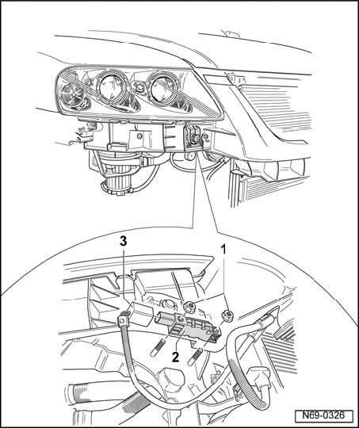

Front Airbag Crash Sensors, Removing and Installing
Front Airbag Crash Sensors, Removing And Installing
Removing
NOTE: Removal and installation is described for the right-hand side of the vehicle. Removal and installation for the left-hand side is performed in the same manner.
CAUTION: Observe safety precautions for working on airbags.
- Disconnect batteries.
- Remove front bumper.
- Remove two nuts -1- (9 Nm).

- Separate wiring harness -3- from crash sensor -2-.

Installing
- Installation is performed in the reverse order of removal.
- Turn on ignition.
CAUTION: Make sure that no persons are in the vehicle.
- Connect battery ground (GND) strap.